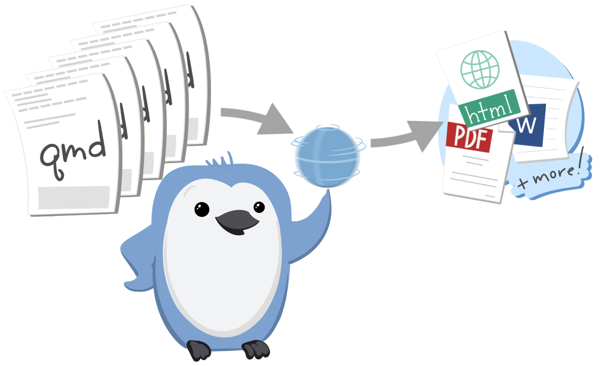
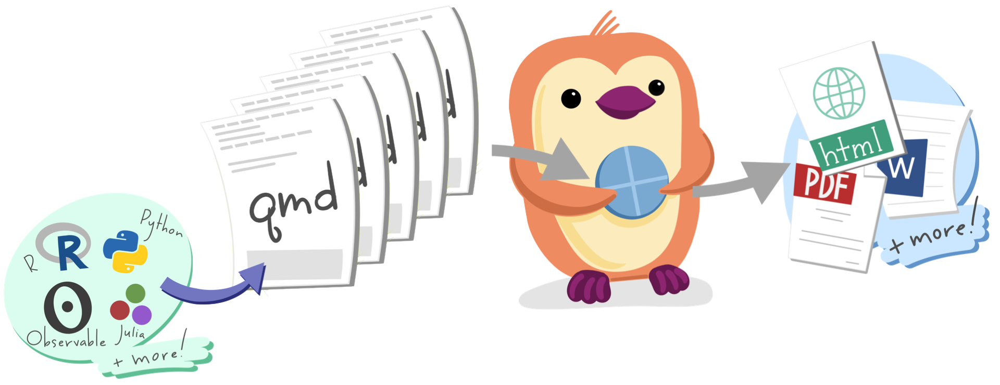

Teach
Julie: Transition: And this has teaching implications that Mine will talk about next.
Mine:Over the last decade I have thoroughly loved teaching R Markdown. It’s amazing when students hit that Knit button, see their code and their prose come together – you can often hear a “wow, that’s so cool” in the classroom the first time that happens. I’ve also loved that this is a tool that they can pick up easily on the first day of an intro course, and it grows with them as their statistical and computational expertise grows. However, as students’ expertise in these areas grow, the computation gets more resource intensive (and even sometimes involving multiple languages) and they end up needing different output formats to support their needs, like PDFs in specific journal styles or a thesis with multiple chapters. A pleasant surprise in teaching with Quarto has been how much less steep the learning curve is for making this transition from single, simple document to a multi-document projects. Let me tell you the story of one of my thesis students.
Quantifying
Art Historical
Narratives
Holland Stam
Art History +
Visual and Media Studies
Class of 2022
Duke University
with Sara Lemus 

Last semester I had an art history student, Holland Stam, working on a pretty quantitative research project. Her thesis explored the representation of artists from different genders and ethinicities in foundational art history books and how this representation has changed, if at all, through editions. If you’ve ever taken an art history course you might be familiar with them: Garner’s Art Through The Ages and Janson’s History of Art. She meticulously collected data from numerous editions of each of the textbooks and measured, page by page, how much space each featured artwork was given and joined that with demographic information on the artists. When I met Holland in my regression course she had only one semester of data science as a background, where she learned R Markdown, and then she started using Quarto as part of coursework in my class. In both classes her experience with computational documents was limited to a single document per assignment, writing a bit of code to analyze data then writing some text to interpret findings. In a sense, this is exactly what her thesis entailed as well, but of course there was more. Multiple chapters, millions of citations in a very specific style that art historians use, captioned figures and tables, and not having to rerun the whole thesis code with each minor edit. With a bit of Googling and a bit of my help, she pretty quickly figured out how to bring chapters of her thesis written in Quarto together with a yaml file, and voiola! She had a thesis written in Quarto. Sure, this took a bit of trial and error and at times frustration, but the fact that she could caption her figures while creating them with code and insert citations without manual text styling, she was sold! It is always so heartwarming to see your students push what you’re teaching them and use them to solve their problems, it’s especially heartening when this happens with a new thing you’re teaching for the first time while the thing is still in active development! And, by the way, if you’re interested in the data, Holland and another student of my, Sara Lemus, packaged it up as “arthistory”. Sara is a stats major who had a lot more experience with R and was working with me for updating some data packages I maintain to learn about package development. She got interested in Holland’s thesis during our lab meetings and it was clear the two of them, with their newly acquired skills and enthusiasm, should team up and make the data available to more researchers, and packaged it up and even got it on CRAN!
But, back to Quarto… like for Holland, Quarto has provided simple but effective solutions for so many of my problems as an instructor too. Instead of telling you about them, let me show you!
Add demo notes
Quarto flattens the learning curve

So, in regards to teaching, I’ve talked about a much less steep hill students need to climb as their projects grow. I’ve also said this was a pleasant surprise as it was not something I had thought about when I started teaching with Quarto. But, in hindsight, this was no coincidence. Quarto’s features like consistent citation syntax, more intentional control over when computations should run or rerun, and a single, minimal yaml that controls inputs, layouts, theming, etc. all contribute to flattening this learning curve.
Quarto can grow with learners in a profound way

And beyond learners growing and expanding the scope of their work easily with Quarto, Quarto can grow with them in a profound way as well. The fact that Quarto is language and authoring tool independent offers an opportunity for folks to take Quarto with them on their data science journey, wherever that journey takes them. I mean.. I’m almost tempted to finally learn Python to see it in action in Quarto. But who I know is learning Python, and Julia, and other languages are my students in their Computer Science courses. To imagine that they could learn R in RStudio using Quarto in my course, and then continue to use Quarto in Jupyter in their CS courses… That sounds like such a bright future to me!
[Pause] And a bright future includes things we can’t even imagine yet.
[Mine continue on next slide]